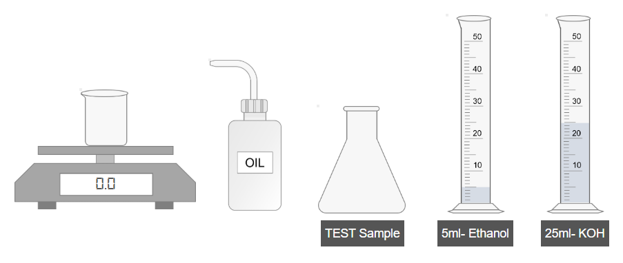
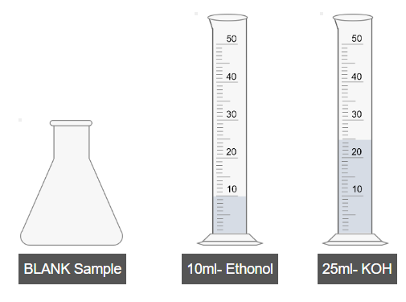
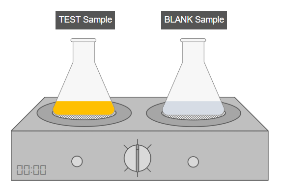
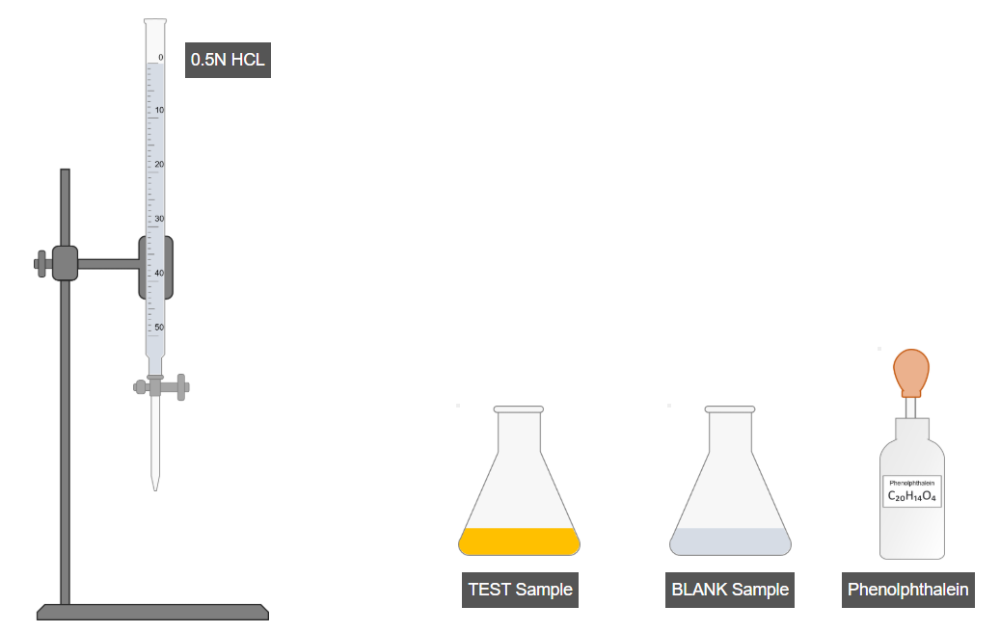
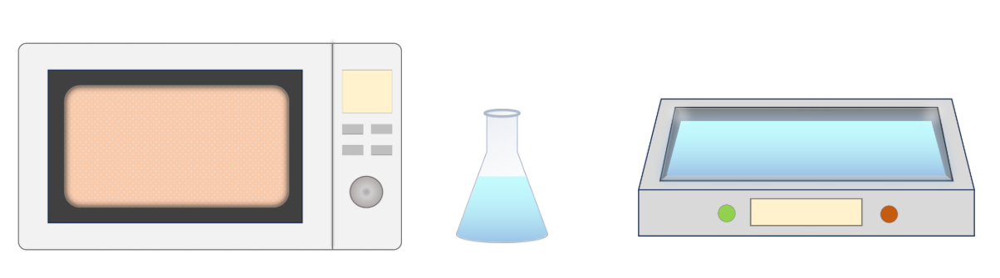
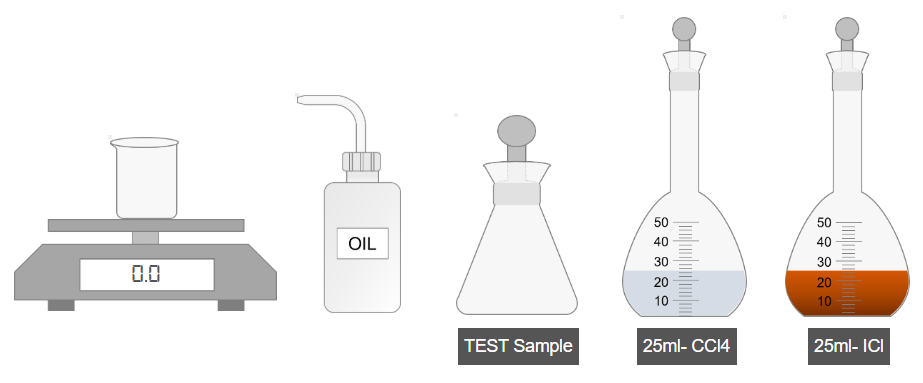
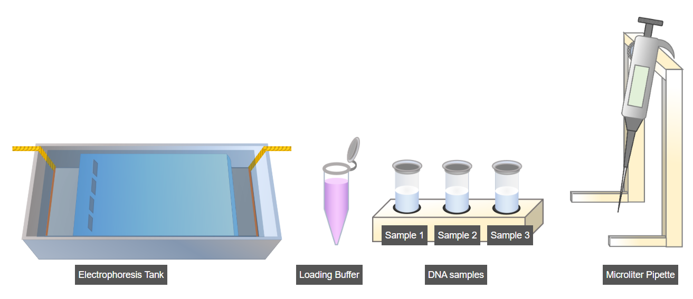
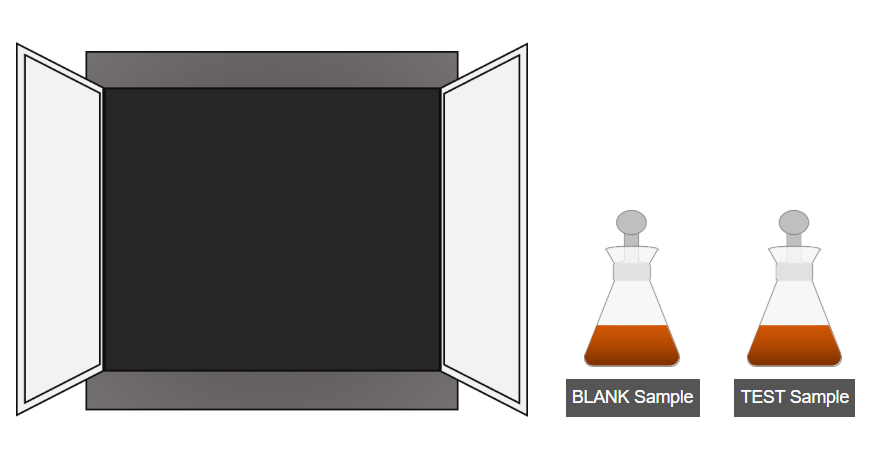
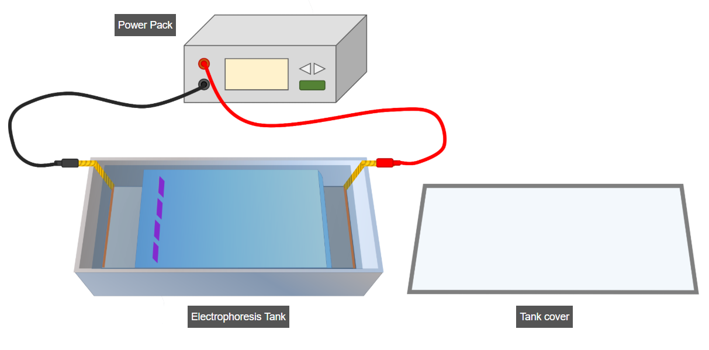

Experimental Procedures for Quantitative Analysis of Fats
1. Determination of Saponification Value

A. Preparation of Test Sample
- Accurately weigh 1 g of oil and transfer it into a clean beaker.
- Pour the oil from the beaker into a conical flask.
- Add 5 mL of ethanol to the flask.
- Shake the mixture thoroughly to dissolve the oil.
- Add 25 mL of potassium hydroxide (KOH) solution to the flask.
- Shake the mixture again to ensure complete mixing.

B. Preparation of Blank Sample
- Add 10 mL of ethanol into a separate flask.
- Add 25 mL of KOH solution to the same flask.
- Shake the blank sample thoroughly.

C. Refluxing
- Attach a reflux condenser to both the test and blank flasks.
- Heat both samples in a boiling water bath for 1 hour.

D. Titration
- Add a few drops of phenolphthalein indicator to the test sample and shake.
- Similarly, add a few drops of phenolphthalein to the blank sample and shake.
- Titrate the test sample using a burette until the endpoint is reached.
- Record the burette reading for the test sample.
- Titrate the blank sample in the same manner.
- Record the burette reading for the blank sample.
- Use both readings to calculate the saponification value.
2. Determination of Acid Value

- Weigh 1 g of oil and transfer it to a beaker.
- Pour the oil into a conical flask.
- Add 20 mL of ethanol to the flask.
- Shake well to dissolve the oil completely.
- Add a few drops of phenolphthalein indicator.
- Shake the solution again.
- Titrate the mixture using a standard alkali solution until a faint permanent pink color appears.
- Record the burette reading.
- Use the recorded value to calculate the acid value of the oil.
3. Determination of Iodine Value

A. Preparation of Test Sample
- Weigh 3 g of oil and transfer it to an iodine flask.
- Add carbon tetrachloride to dissolve the oil.
- Shake the mixture thoroughly.
- Add iodine monochloride solution to the flask.
- Shake the mixture again for proper reaction.

B. Preparation of Blank Sample
- Add carbon tetrachloride into another iodine flask.
- Add iodine monochloride solution to the same flask.
- Shake the blank sample thoroughly.

C. Dark Incubation
- Place both the test and blank samples in a dark place for 30 minutes to allow complete reaction.

D. Titration
- Titrate the test sample using standard sodium thiosulfate solution.
- When the solution becomes light yellow, add starch indicator.
- Continue titration until the blue color disappears.
- Record the burette reading for the test sample.
- Repeat the same titration process for the blank sample.
- Record the burette reading for the blank sample.
- Use both values to calculate the iodine value.